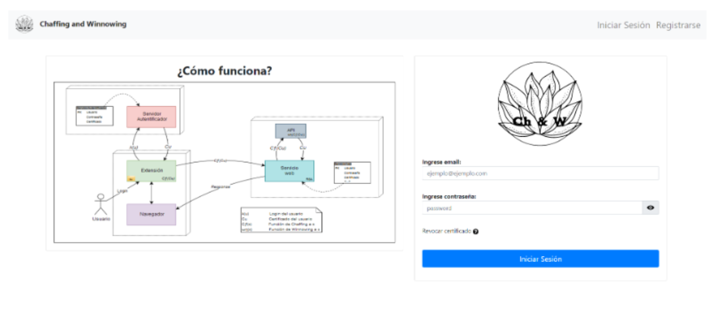
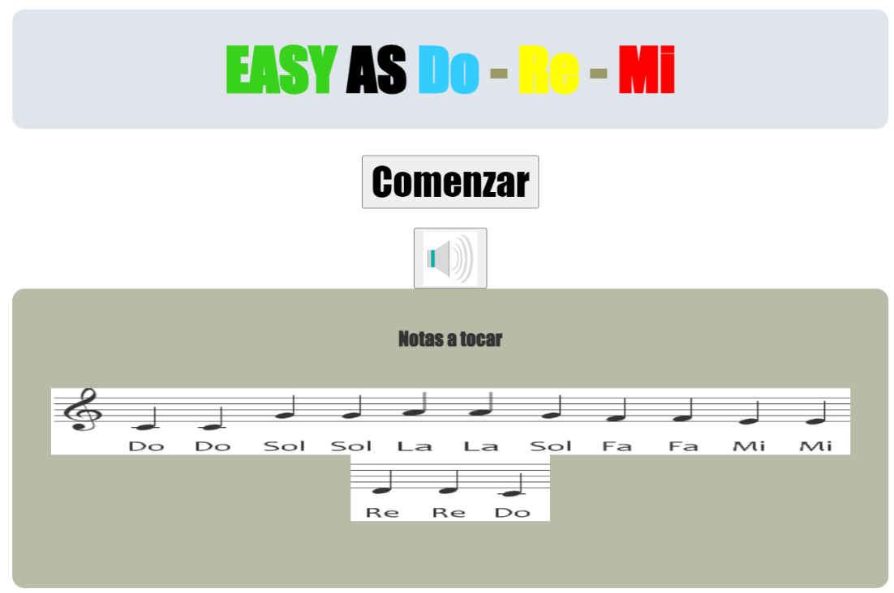
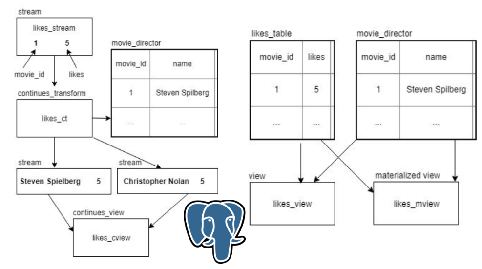
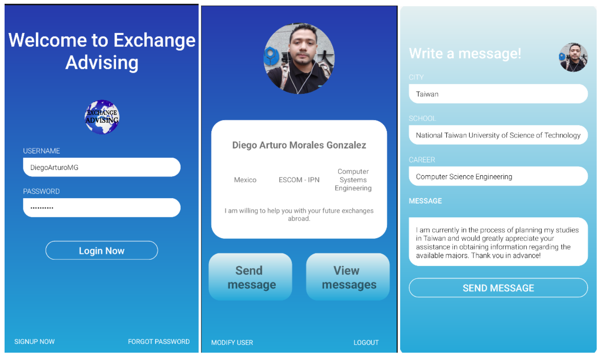

Building cloud-native microservices at Oracle · Master's student in Applied Artificial Intelligence.
May 2021 - Present
Java · Spring Boot · JavaScript · Microservices · Oracle Database · PL/SQL · SQL · NoSQL · Elastic Stack (ELK) · OpenSearch · YAML · Docker · Kubernetes · Oracle Cloud Infrastructure (OCI) · Terraform · Jenkins · Artifactory · JFrog · Grafana · Prometheus · Apache Kafka · JUnit · JaCoCo · Mockito · Figma · Oracle JavaScript Extension Toolkit (OJET) · Oracle APEX · HTML · CSS · Git
April 2020 - April 2021
Java · SQL · JavaServer Faces (JSF) · Spring Framework · PrimeFaces · Angular
June 2019 - January 2020
jQuery · Java · SQL · Bootstrap · HTML · JavaScript · ColdFusion · CSS
September 2026 - Present
Graduate program focused on applying artificial intelligence, machine learning and data science to real-world problems, complementing my professional experience in cloud systems and microservices.
August 2015 - December 2019
During my undergraduate studies, I was a high-achieving student for nine semesters, consistently earning top grades and receiving several recognitions from my institution. I was also selected as one of two students from all institutions in Mexico to represent my country in Taiwan for six months as an exchange student. During my time in Taiwan, I participated in academic challenges and learned about different cultures. I am confident that my academic achievements and experiences have prepared me well for graduate school and beyond.
August 2018 - January 2019
I was a student ambassador in Taiwan for six months as an exchange student. During my time there, I participated in academic challenges and events with my master's degree colleagues, and took courses in
Machine Learning || Data Science || Software Engineering.
I learned a great deal about Taiwanese culture and society, and I made many lasting friendships.
2011 - 2014
During my technician's degree, I began my introduction to programming classes with C++, and I learned a great deal about the language. I then continued with several other languages, including C, Java, VB, and PHP. I also gained a strong understanding of both software and hardware. I developed several final projects, and my final project was a library system access control system for my institution.
Oracle Cloud Infrastructure (OCI) · Kubernetes · Docker · Terraform · Jenkins · Artifactory / JFrog · Git
Java · Spring Boot · Microservices · Apache Kafka · Python · JavaScript · Oracle APEX
SQL · PL/SQL · Oracle Database · NoSQL · Elasticsearch · OpenSearch
Prometheus · Grafana · Kibana (Elastic Stack)
JUnit · Mockito · JaCoCo
JavaScript · Oracle JET · HTML · CSS · Figma

Co-Creator of a prototype which provides auto login to users, in this way the users will use certificates (as a password) to get access to their web services by a Google Chrome extension. all of this is possible through a certification authority that provides the user certificate. Proposing the Chaffing and Winnowing as an authentication alternative where I was responsible for Backend and Frontend.
NodeJS - Javascript - MongoDB - HTML - CSS - JQuery - MySQL - Spring - Java

Easy as Do-Re-Mi is an advanced music study application that harnesses the power of Mongoose, a robust network library for C/C++. Designed to facilitate in-depth musical analysis and education, Easy as Do-Re-Mi utilizes Mongoose's event-driven non-blocking APIs to seamlessly handle a variety of network protocols, including TCP, UDP, HTTP, WebSocket, MQTT, and more. By integrating Mongoose, Easy as Do-Re-Mi enables users to engage in real-time transmission and analysis of musical notes, whether they are capturing live performances, transcribing compositions, or exploring music theory concepts. With its scalability, flexibility, and performance, Easy as Do-Re-Mi, powered by Mongoose, offers a comprehensive solution for musicians, educators, and enthusiasts seeking to deepen their understanding and appreciation of music.
C++ - Python - Javascript - HTML - CSS

In our research, we undertook a meticulous examination of query execution durations within Data Stream Management Systems and Relational Database Systems. Specifically, our study focused on the comparative performance analysis of PostgreSQL's view, materialized view, and PipelineDB's continuous view. Our investigation unveiled that, within the delineated parameters of our study, the continuous view exhibited heightened efficacy in contrast to the PostgreSQL view. Furthermore, both materialized and continuous views demonstrated a sustained pattern of minimal query overhead throughout our rigorous evaluation.
PostgreSQL

Exchange Advising, built with Java, is a specialized mobile app crafted for students planning to embark on international exchange programs. Its core functionality allows users to effortlessly send messages to every registered student within a particular school or institution, serving as a bridge for prospective classmates to connect even before arrival. By fostering communication among students bound for the same destination, Exchange Advising enhances the exchange experience, facilitating the exchange of information, tips, and camaraderie.
Java